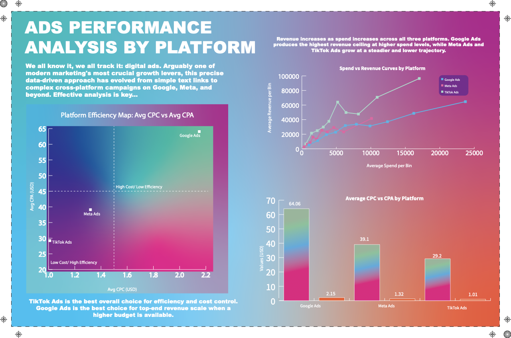

Data Science Project
Spend, revenue, and efficiency across Google Ads, Meta Ads, and TikTok Ads
This dashboard explores a synthetic global ads performance dataset: daily rows with platform,
industry, campaign type, spend, revenue, and efficiency metrics. Charts are driven by
dashboard/data.json, built from the cleaned tables in
data/processed/.
• Compare cost efficiency (CPC and CPA) across Google Ads, Meta Ads, and TikTok Ads.
• See how revenue scales with spend, and where returns start to flatten.
• Identify the winning campaign type (best group ROAS) for each platform × industry.

Group ROAS is sum(revenue) / sum(ad_spend) for each platform × industry × campaign
type. Bars show the winning campaign type per industry, with a shared vertical scale.
Ten quantile bins of ad spend per platform; points are bin means. Revenue rises with spend on all three platforms; Google Ads has the highest ceiling at larger budgets.
mean_revenue / mean_spend per bin versus average spend in that bin. Lower values
at higher spend point toward saturation.
Platform averages from the processed aggregates. TikTok Ads sits in the low-cost, high-efficiency corner; Google Ads is higher cost on both axes.
One axis (USD): teal = Avg CPC, coral = Avg CPA. Platforms sorted by avg CPA, high to low.